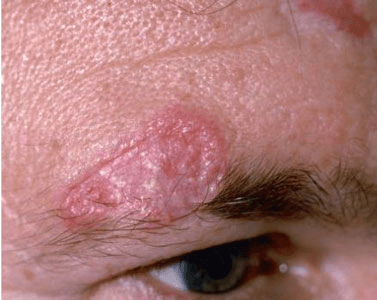
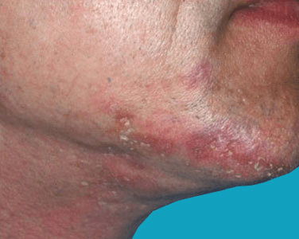

Lupus is a disease in which your body's self-protection mechanism (immune system)
attacks your own body rather than a foreign invader. The cause of lupus is unknown,
and the disease usually takes one of two forms: systemic lupus erythematosus (SLE),
which can affect any body organ; and discoid lupus erythematosus (DLE), which is
milder and usually affects only the skin. About 5%–10% of patients with discoid
lupus erythematosus will progress to systemic lupus.
This condition causes a severe rash that tends to get worse when exposed to sunlight.
The rash can appear anywhere on the body, but you’re likely to see it on the scalp, neck,
hands, and feet. Severe cases can lead to permanent scarring, hyperpigmentation,
and hair loss.


Other things you can do: